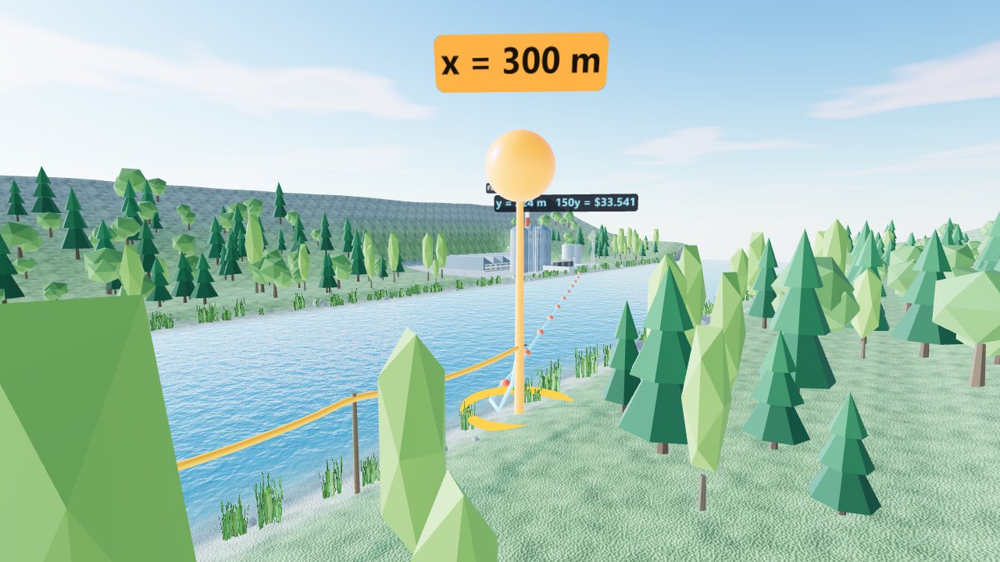

Maqueta sobre una mesa
Se arrastra el poste a lo largo de la orilla y se comparan x, y, la longitud del tendido y el costo, con el gráfico de C(x) al lado.
Abrir la maquetaUn problema de Cálculo en una variable construido como escena WebXR para Meta Quest 3 y para el navegador de escritorio. Se ve la función objetivo y se mueve la variable para observar cómo cambian las magnitudes del problema.
Un río rectilíneo de 100 m separa una planta eléctrica de una fábrica ubicada 500 m río arriba, en la orilla opuesta. Tender el cable por la orilla cuesta $90 por metro y sobre el agua $150 por metro. ¿Cuál es la longitud del tendido más económico?
C(x, y) = 90x + 150y, con y = √((500 − x)² + 100²) y 0 ≤ x ≤ 500
x son los metros de cable por la orilla de la planta e y los metros sobre el agua. El intervalo es cerrado e incluye los extremos x = 0 y x = 500.
Se arrastra el poste a lo largo de la orilla y se comparan x, y, la longitud del tendido y el costo, con el gráfico de C(x) al lado.
Abrir la maqueta
Se camina junto al río, con la planta y la fábrica a 500 m, y se ve el cable sobre la orilla y sobre el agua.
Abrir a escala realEl punto mínimo se marca en el gráfico solo cuando se pide con «Revelar solución», y «Ir al óptimo» lleva el poste hasta ese punto. Las fórmulas, la solución y las comprobaciones están en docs/modelo.md.
Código con licencia MIT. Funciona sin conexión una vez cargado y no recoge datos de quien lo usa. Hecho con three.js. © 2026 Claudio Fuentealba, Universidad Austral de Chile.